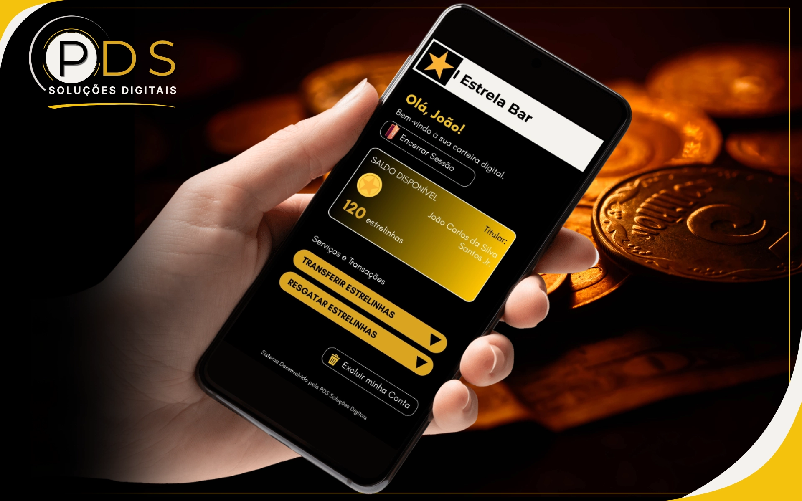

Fidelização e Relacionamento
Clientes buscam ter motivos para voltar.
Sistemas de fidelização que recompensam os clientes, incentivam novas compras e ajudam a construir relacionamentos duradouros.
- Cashback e recompensas.
- Programas de fidelidade.
- Promoções exclusivas.
- Relacionamento com clientes.